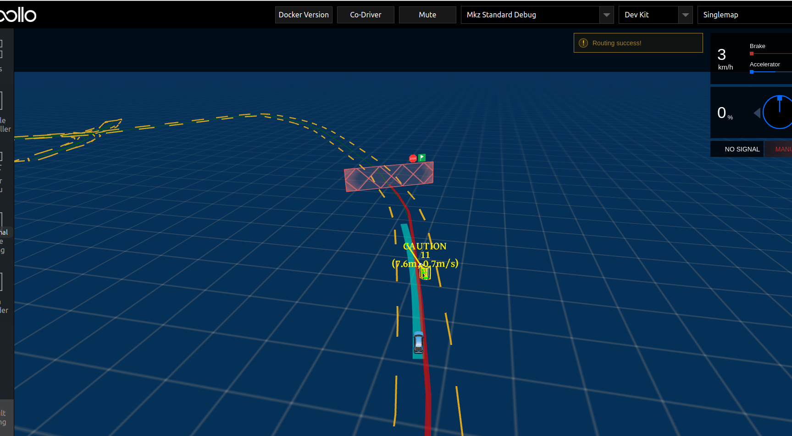

基于双目感知的封闭园区自动驾驶搭建--自动驾驶演示
前提条件
-
正确完成了封闭园区自动驾驶搭建--规划适配。
-
正确完成了基于双目感知的封闭园区自动驾驶搭建--设备集成。
-
确保在道路平整、车少人少等相对安全的情况下实验。
-
确保至少两人操作，一人操作工控机，一人操作遥控器，做好随时接管准备。
启动流程
-
进入docker环境，编译apollo，启动DreamView。
cd /apollo bash docker/scripts/dev_start.sh bash docker/scripts/dev_into.sh bash apollo.sh build_opt bash scripts/bootstrap.sh -
在浏览器中打开(http://localhost:8888)，选择
Dev_Kit并选择相应高精地图，在Module Controller标签页启动Canbus、GPS、Localization、Camera、Transform模块。

-
在docker中输入
cyber_monitor命令并检查以下channel（使用上下方向键选择channel，使用右方向键查看channel详细信息）：channel_name 检查项目 /apollo/localization/pose确保能正常输出数据 /apollo/sensor/gnss/best_pose确保能正常输出数据， sol_type:选项显示为NARROW_INT/apollo/sensor/smartereye/image确保能正常输出数据，帧率在15帧左右 /tf确保能正常输出数据 /tf_static确保能正常输出数据 -
在
DreamView的Module Controller界面点击ThirdPartyPerception按钮启动双目相机感知，使用cyber_monitor查看/apollo/perception/obstacles是否正常输出，并在DreamView上查看障碍物信息：查看车前方10米处运动的人或者自行车（自行车上要有人），在DreamView上查看障碍物颜色以及位置速度信息（自行车青蓝色，行人黄色，车辆绿色），如下图所示：

/apollo/perception/smartereyeobstacles的数据如下图所示：


确保在Dreamview上能看到障碍物并且/apollo/perception/obstacles有障碍物信息。
-
在Module Controller标签页启动Planning、Prediction、Routing、Control模块确保这些模块能够正常启动。
-
在Routing Editor标签中点击Add Point of Interest按钮添加一个point 然后选择Send Routing Request按钮发送添加的routing点，从DreamView中查看会出现一个蓝色的线以及一个红色的stop标志。如下图所示：

- 在车前方存在人或者自行车（车上有人）时，在Tasks标签页查看Planning轨迹线，如下图所示：

在docker环境中输入命令cyber_monitor并查看Planning channel信息：

如果出现上图所示轨迹线和channel信息，表示规划模块适配和开环测试通过，否则继续查看log信息进行调试。
- 在附近没有人员和车的情况下，遥控器下放权限并在Tasks标签页中点击Start Auto使车进入自动驾驶状态，在车自动驾驶这个过程中做好随时用遥控器接管，确保安全的准备。
注意：如果Planning启动不起来的话，可通过摆正车的朝向以及在地图中的位置多试验几次。